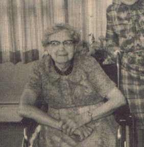

|

|
Hannah Amundson was born July 7th, 1882 to Amund and Helene Simonson. She was their first child born in America, as they had immigrated from Norway the previous year. She married Carl Faldet. He died in 1951. Hannah moved into the Iola Nursing Home in 1966. She died in March of 1977 at the age of 94. |